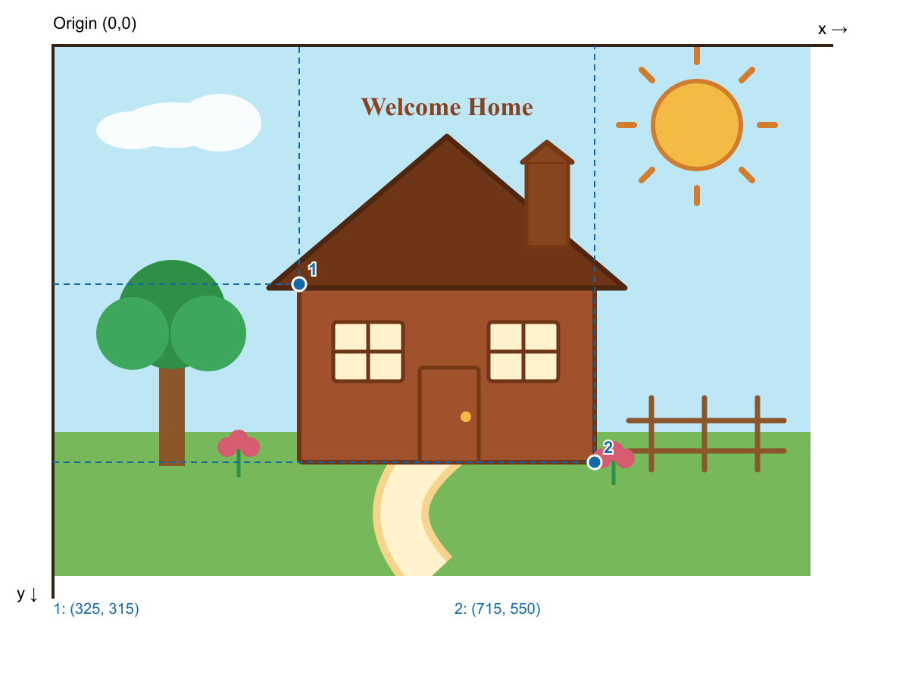
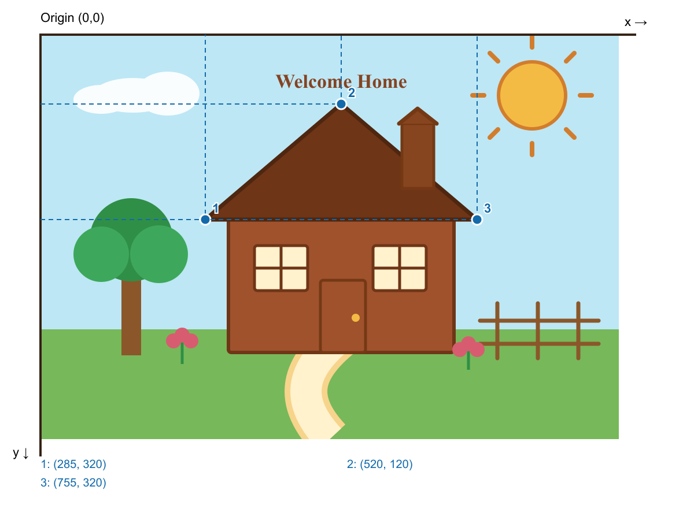

House rectangle
<rect x="325" y="315" width="390" height="235" />
The first point is the top-left corner. Width and height extend right and down.
The picture uses SVG primitives and a shared window group to demonstrate shapes, coordinates, fills, strokes and transforms.
The SVG uses a 1000 × 700 coordinate system. Its origin, (0,0), is at the top-left; x increases to the right and y increases downwards.
The annotations connect visible points to the attributes used in the SVG code.
<rect x="325" y="315" width="390" height="235" />
The first point is the top-left corner. Width and height extend right and down.
<circle cx="850" cy="105" r="58" />The centre is (850,105). The radius extends 58 units from the centre.
<ellipse cx="160" cy="105" rx="70" ry="30" />rx is the horizontal radius; ry is the vertical radius.
<line x1="790" y1="465" x2="790" y2="560" />A line joins its start and end points. Both x values are equal, so this line is vertical.
<polyline points="620,154 652,128 685,154" />The points are joined in order. A polyline does not automatically close its outline.
<polygon points="285,320 520,120 755,320" />
The final point connects back to the first to form a closed triangle.
<path d="M 500 700 C 430 625, 455 570, 535 510" />M sets the start. C gives two control points followed by the end point; the curve need not pass through the control points.
<text x="520" y="92" text-anchor="middle">Welcome Home</text>The anchor lies on the text baseline. Middle alignment centres the text horizontally at x=520.
| Element | Shape | Coordinate or attribute | How it appears |
|---|---|---|---|
| House body | <rect> | x="325" y="315" width="390" height="235" | Starts at (325,315), then extends right and down. |
| Sun | <circle> | cx="850" cy="105" r="58" | Centre is (850,105), with a 58-unit radius. |
| Cloud | <ellipse> | cx="160" cy="105" rx="70" ry="30" | Horizontal radius is wider than the vertical radius. |
| Roof | <polygon> | 285,320 520,120 755,320 | Three connected points form a closed triangle. |
| Chimney cap | <polyline> | 620,154 652,128 685,154 | Three points form an open angled line. |
| Window divider | <line> | x1="46" y1="0" x2="46" y2="78" | A straight line is drawn between two endpoints inside the group. |
| Garden path | <path> | M 500 700 C 430 625, 455 570, 535 510 | A cubic Bézier curve bends from the foreground to the door. |
| Heading | <text> | x="520" y="92" text-anchor="middle" | The text is centred around x=520 with its baseline at y=92. |
The HTML table records how the starter idea was changed rather than placing text inside the picture.
| Element | Before | After | Reason |
|---|---|---|---|
| House | Plain brown rectangle | Brown body with a darker roof and outline | Creates a consistent warm colour scheme and keeps the house clearly recognisable. |
| Sun | Plain yellow circle | Amber circle at (850,105) with orange stroke and eight rays | Demonstrates circle, line, fill and stroke attributes. |
| Windows | Two separate rectangles | Two detailed windows inside one translated <g> | Applies identical styling and demonstrates grouping. |
| Path | Single orange curve | Layered cream Bézier path | Creates depth while retaining the path primitive. |
| Garden | Tree and grass only | Added clouds, flowers, fence and chimney | Uses more SVG primitives and customises the scene. |
| Text | “House” at the right | “Welcome Home” centred above the roof | Demonstrates positioning and text-anchor. |
<g class="windows" transform="translate(370 365)"
fill="#fff2cd" stroke="#6f3517" stroke-width="5">
<rect x="0" y="0" width="92" height="78" />
<rect x="205" y="0" width="92" height="78" />
</g>The coordinates inside the group are local. The translation moves both windows 370 units right and 365 units down together.
Each row groups a brand name, its themed count bar and its exact value. The labels make the sorted TV brand comparison readable without inspecting the CSV or page code.
Loading CSV data…